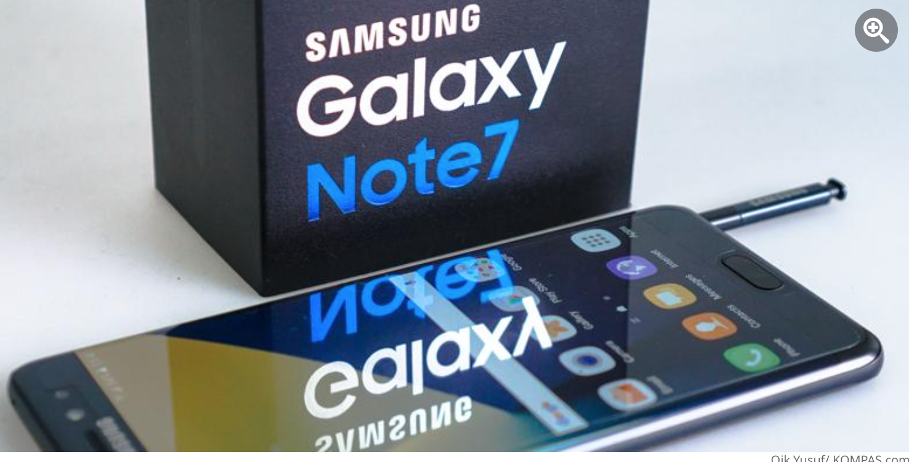
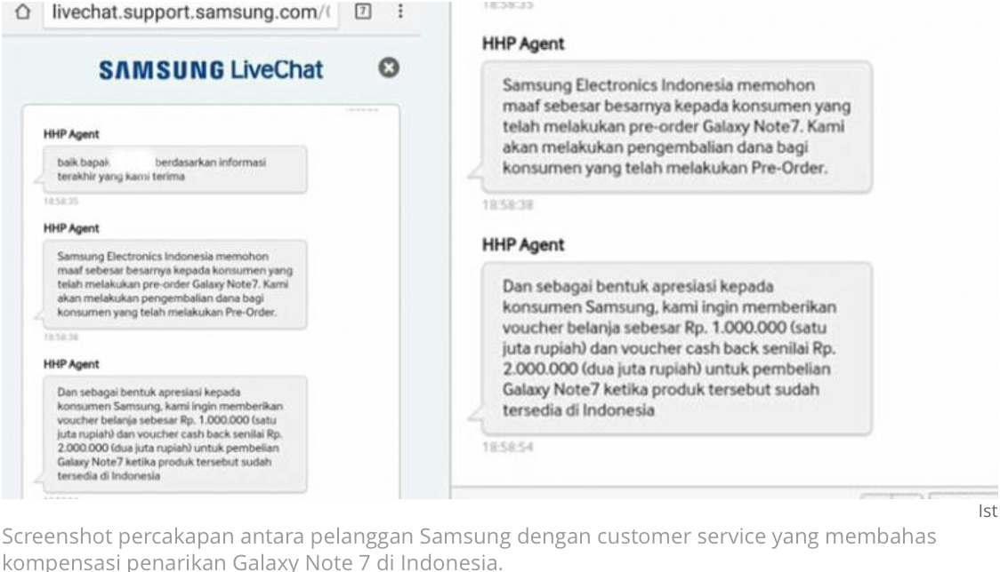

Pre-Order Galaxy Note 7 Batal, Ini Ganti Rugi dari Samsung

KOMPAS.com - Samsung Electronics Indonesia (SEIN) membatalkan sesi pemesanan (pre-order) phablet Galaxy Note 7 untuk pelanggannya di Indonesia, menyusul banyaknya kasus yang melibatkan baterai perangat di sejumlah negara.
Sebagai bentuk tanggung jawab, selain mengembalikan penuh biaya pre-order (refund) yang telah dikeluarkan konsumen, Samsung Electronics Indonesia juga menyiapkan ganti rugi/kompensasi bagi pelanggan yang telah memesan Galaxy Note 7, seperti yang dijelaskan oleh Marketing Director IT & Mobile Samsung Indonesia, Vebbyna Kaunang beberapa waktu lalu.
Lantas kompensasi apa yang dimaksud oleh Samsung?

Berdasar screenshot percakapan (Live Chat) di situs resmi Samsung antara konsumen dengan customer service (CS), yang didapat KompasTekno dari sumber yang tidak mau disebut namanya, Sabtu (3/9/2016), Samsung memang menyediakan kompensasi yang menarik.
Kompensasi tersebut berupa voucher belanja senilai Rp 1 juta (tidak diketahui merchant-nya), dan cash back (diskon) Rp 2 juta jika pelanggan tersebut ingin membeli Galaxy Note 7 lagi saat produk tersebut tersedia di Indonesia.
Recall karena baterai
Sebelumnya, Samsung global telah mengumumkan menghentikan produksi Galaxy Note 7 dan menarik peredarannya dari pasar, setelah terjadi laporan baterai yang bermasalah, seperti terbakar atau meledak di beberapa negara.
"Kami telah melakukan investigasi menyeluruh dan menemukan kendala dalam baterai, bisa diperbaiki dengan menggantinya, tapi kami juga akan mengajukan solusi untuk para konsumen" ujar juru bicara Samsung.
"Mengingat keamanan konsumen adalah prioritas utama bagi Samsung, maka kami harus menghentikan penjualan Galaxy Note 7," imbuh juru bicara tersebut.
Untuk diketahui, di Indonesia sendiri, Galaxy Note 7 yang dijual seharga Rp 10.777.000 (versi 64 GB) itu ludes dipesan dalam waktu tiga hari semenjak sesi pemesanan dibuka pada 5 Agustus lalu. Samsung tidak menyebut angka pastinya.
Konsumen yang memiliki pertanyaan soal refund Galaxy Note 7 bisa menghubungi call center Samsung Indonesia di nomor toll free 0-800-112-8888 atau (021) 5699-7777. Bisa juga melalui layanan live chat di situs Samsung Indonesia.